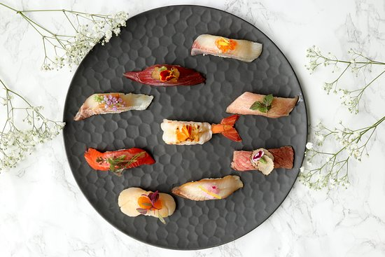
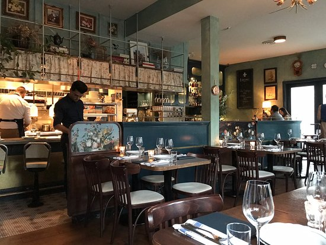

Black & Blue emanates luxury and sophistication. The Golden Age of hospitality-from juicy steaks to tableside Caesar salads combined with gracious & crisp service. Be prepared to enjoy a classic cocktail, peruse the notable wine list and bask in the sumptuous decor. A striking Himalayan Rock Salt "Wall" houses an extensive selection of prime cuts available from Wagyu to US & Canadian Prime. Join them for lunch, happy hour and dinner.
Miku

Miku Vancouver specializes in Aburi, or flamed-seared, sushi, which was developed nearly a century ago in Japan. The act of applying fire directly to sushi enhances the natural flavours and textures of the fish, creating a new and exciting culinary experience. Miku owner Seigo Nakamura innovated the Aburi concept by crafting specialty sauces using non-traditional Japanese ingredients to pair with each type of fish. The light sear from the binchotan (Japanese bamboo charcoal) caramelizes the sauce, releasing a smoky aroma and bringing out the finest flavours in each piece of Aburi sushi. Miku Restaurant is within walking distance from the Pan Pacific Hotel, Canada Place, Fly Over Canada, Cruise Ship Terminals and Sea Bus.
St.Lawrence Restaurant

There is so much to love about St. Lawrence with its textured walls, mosaic-tiled floor, antiques and open kitchen. A hit ever since opening, this charming French-Canadian bistro shares a true sense of place. It's even named for the region's mighty river. Sit close enough to Chef/owner Jean-Christophe Poirier's kitchen to experience the aromas of his rustic and hearty French-Canadian cooking. Begin with oreilles de crisse, a plate overflowing with crispy pork ears tossed in maple syrup and Montreal spices. Here, split pea soup takes on next-level flavor thanks to the addition of smoked bacon and foie gras. Finally, tarte au sucre is buttery and flaky, but it's that sweet maple syrup, vanilla and brown sugar filling that wins your heart.